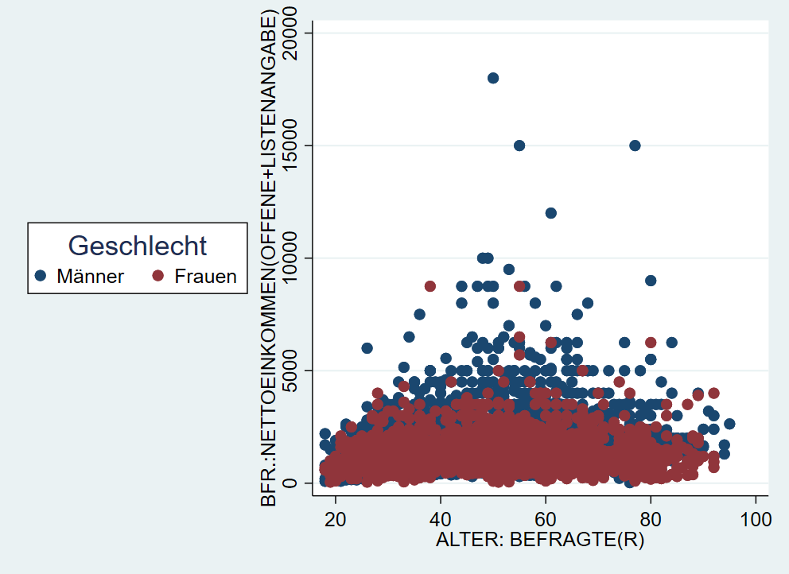

- Herzlich Willkommen!
- 1 Einstieg in Stata
- 2 Arbeiten mit Datensätzen in Stata
- 2.1 Vorab: Befehlsstruktur & Hilfe
- 2.2 Auszählen & Überblick erhalten
- 2.3 Neue Variablen erstellen
- 2.4 Bestehende Variablen verändern
- 2.5 gen ist gut, Kontrolle ist besser
- 2.6 Fehlende Werte
- 2.7 if Bedingungen und fehlende Werte
- 2.8 keep & drop
- 2.9 Labels und if-Bedingungen
- 2.10 Nochmal von vorne: Daten neu laden
- 2.11 Speichern
- 2.12 Übungen 2
- 2.13 Profi-Übungen 2
- 3 Deskriptive Statistik
- 4 Datenvisualisierung in Stata
- 5 Zusammenhangsmaße
- 6 Zusammenhänge 2
- 7 Inferenzstatistik I
- 8 t-Tests
- 9 Hypothesentests
- 10 Ergebnisexport & weitere Tipps
- 11 Fortgeschrittene Themen
4.8 Optionen
Diese grundlegenden Darstellungen können mit Hilfe einer ganzen Reihe an Optionen angepasst werden. Auch hier beschränken wir uns auf die wesentlichsten Optionen. Bei konkreten Fragen hilft oftmals auch eine Google-Suche nach: “stata graph text smaller” o.ä.
4.8.1 Titel
Eine klare Beschriftung ist zentraler Bestandteil jeder Datenvisualisierung. Folgende Überschriften stehen uns dazu zur Verfügung:
graph ...., title("Titel") subtitle("Untertitel") xtitle("x-Achsentitel") ytitle("y-Achsentitel") caption("Bildunterschrift")Weitere Optionen unter help title_options.
4.8.2 Achsenbeschriftung
Außerdem können wir die Achsenbeschriftungen verändern - hier ein Beispiel für die x-Achse9
xscale(range(0 100))\(\rightarrow\) x-Achse auf 0-100 ausdehnenxtick(0 (10) 100 )\(\rightarrow\) an allen Zehner-Grenzen zwischen 0 und 100,0(10)100ist die Abkürzung für0,10,20,30,40,50,60,70,80,90,100xlabel(0 "Null" 10 "zehn" 20 (10) 100)\(\rightarrow\) Beschriftung der “ticks”
Mehr Optionen finden sich unter help axis_label_options. Bspw. kann man mit xlabel(..., alternate) die Achsenlabels nach oben und unten verschieben.
4.8.3 Text einfügen
Wir können mit text() auch ein Text auf der Grafik positionieren - wie geben erst die y-Koordinate, dann die x-Koordinate an und dann den gewünschten Text:

4.8.4 Schriftart & Textgröße
Eine Reihe an Schriftarten stehen für Textangaben zur Verfügung:
graph twoway scatter inc age, ///
title("{stSerif:Einkommen {bf:fett} {it:kursiv}}") ///
subtitle("Text{superscript:hochgestellt}{subscript:tiefgestellt}") ///
xtitle("Alter {it:age}") ytitle("{stMono:Einkommen}") ///
xlabel(0 " {stMono:Null}" 10 "{bf:zehn}" 20 (10) 100) ///
text(15000 20 "Hier ein Symbol: {&Omega}") xscale(range(0 100))
Mehr dazu unter help graph_text
Außerdem können wir mit der Option size die jeweilige Größe des Textes anpassen, dabei können wir die Größenangaben aus der Palette verwenden. Mit der Option angle(90) können wir außerdem den Text um 90 Grad (und natürlich um jeden beliebigen Wert durch entsprechende Angabe):
graph twoway scatter inc age, ///
title("Text1", size(vsmall)) ///
subtitle("Untertitel",size(large)) ///
xtitle("Alter",size(small)) ytitle("{stMono:Einkommen}",size(vhuge)) ///
xlabel(0 " {stMono:Null}" 10 "{bf:zehn}" 20 (10) 100 , labsize(tiny) angle(90))Wenn die Option over verwendet wird, dann müssen die Textoptionen in over angegeben werden:

4.8.5 Legende
Oben hatten wir gesehen, dass die automatische Legende nicht unbedingt aussagekräftig ist. Mit der Option legend können wir die Legende beschriften und einen Titel vergeben:
graph twoway (scatter inc age if sex==1) (scatter inc age if sex==2), ///
legend(lab(1 "Männer") lab(2 "Frauen") title("Geschlecht"))Mit der Option pos können wir außerdem die Position der Legende anpassen - wir geben dabei eine Zahl zwischen 0 und 12 an. Die Werte 1-12 entsprechen die Stunden auf einer Uhr, 0 setzt die Legende in die Mitte der Grafik.
graph twoway (scatter inc age if sex==1) (scatter inc age if sex==2), ///
legend(lab(1 "Männer") lab(2 "Frauen") title("Geschlecht") pos(9))
Weitere Optionen und Beispiele unter help legend_options. Mit legend(off) kann die Legende auch ausgeblendet werden.
4.8.6 Marker
Im Stata-Jargon werden die Punkte “marker” genannt. Deren Aussehen können wir mit entsprechenden Optionen ebenfalls verändern. Zum einen können wir mit msymbol die Form des Markers verändern, mit msize können wir die Größe und mit mcolor die Farbe anpassen:
 Dabei können wir aus einer Reihe an Formen, Größen und Farben wählen:
Dabei können wir aus einer Reihe an Formen, Größen und Farben wählen:


(#fig:msymbol_size_overview)Marker Optionen
In unserem Beispiel vorhin hatten wir die Farben der marker aber genutzt, um die Angaben für Männer und Frauen zu unterscheiden. Hier geben wir dann mcolor etc. jeweils innerhalb der Klammern an:
graph twoway ///
(scatter inc age if sex==1, mcolor(orange) msize(small)) ///
(scatter inc age if sex==2, mcolor(sand) msymbol(D) msize(small)), ///
legend(lab(1 "Männer") lab(2 "Frauen")) 
Mit mlcolor und mlwidth können wir jedem marker die Farbe und Dicke10 der Umrandung angeben:
graph twoway ///
(scatter inc age if sex==1, mcolor(orange) msize(small) mlcolor(gs3) mlwidth(vthin)) ///
(scatter inc age if sex==2, mcolor(sand) msymbol(D) msize(small) mlcolor(gs3) mlwidth(vvthin)), ///
legend(lab(1 "Männer") lab(2 "Frauen")) 
4.8.7 Farben
Obwohl es um Darstellungen geht, haben wir noch sehr wenig über Farben gesprochen. Neben den oben gezeigten vordefinierten Farben können wir auch Farben als RGB-Codes11 angeben und so Farben eigenen Paletten verwenden:
graph twoway ///
(scatter inc age if sex==1, mcolor("91 37 97") msize(small)) ///
(scatter inc age if sex==2, mcolor("150 196 134") msymbol(D)), ///
legend(lab(1 "Männer") lab(2 "Frauen"))
Außerdem können wir mit plotregion(fcolor( )) und graphregion(fcolor( )) die Hintergrundfarben der Grafik und des Koordinatenbereichs anpassen. Mit region(fcolor( )) können wir die den Hintergrund der Legende verändern.
graph twoway ///
(scatter inc age if sex==1, mcolor("91 37 97") msize(small)) ///
(scatter inc age if sex==2, mcolor("150 196 134") msymbol(D)), ///
legend(lab(1 "Männer") lab(2 "Frauen") region(fcolor(red))) ///
plotregion(fcolor(eltblue)) graphregion(fcolor(olive_teal))
Farbpaletten sind ein Thema für sich und was gut aussieht ist natürlich subjektiv…. (das letzte Beispiel wohl eher nicht). Allerdings gibt es einige Leitlinien, siehe hier. Es gibt zahlreiche Möglichkeiten selbst zu erstellen: zB. mit Adobe Color oder Paletton. Außerdem gibt es unzählige Quellen für Farbpaletten: Instagram oder ColorBrewer
4.8.7.1 Boxplots anpassen
Die Farben in Boxplots können wir mit box anpassen - bei mehreren Boxen geben wir zuerst eine Zahl an, auf welche Box sich die Optionen beziehen sollen. Die Ausreißer können wir mit marker berarbeiten:
graph box inc1 inc2 , ///
box(1, color("orange") blcolor(black)) marker(1, mcolor("purple") msymbol("Dh") ) ///
box(2, color("159 97 184") blcolor(navy)) marker(2, mcolor("gs45") msymbol("Sh") ) 
4.8.7.2 Balken/Säulendigramme anpassen
Für Balkendiagramme ist bar() die richtige Option. Mit fcolor können wir die Flächenfarbe anpassen, mit color die Umrandung.
Leider ist die unterschiedliche Einfärbung von Balken etwas komplizierter, hierzu müssen wir erst mit collapse den Datensatz umformen. Siehe hier.
4.8.8 Vorlagen
Eine Alternative ist auf Grafik-Schemata zuzückzugreifen. Beispielsweise wird mit , scheme(sj) die Grafik nach den Vorlage des Stata Journals erstellt:

Mit graph query, schemes wird eine Liste der verfügbaren Schemata angezeigt.
Weitere Optionen bieten zB die blindschemes von Daniel Bischof. Diese müssen zunächst mit ssc install blindschemes installiert werden und stehen dann zur Verfügung, zB
Hier noch ein Beispiel mit plotplain aus blindschemes: